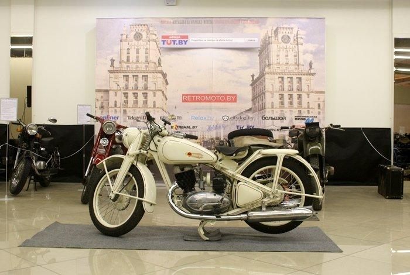
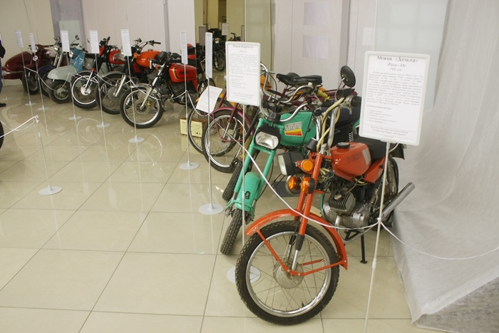
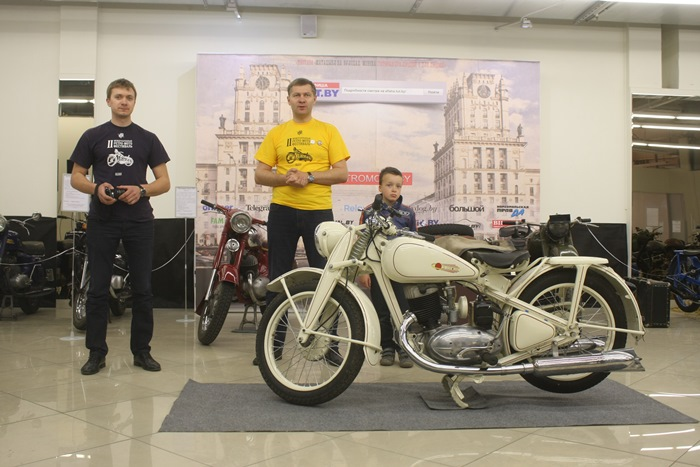
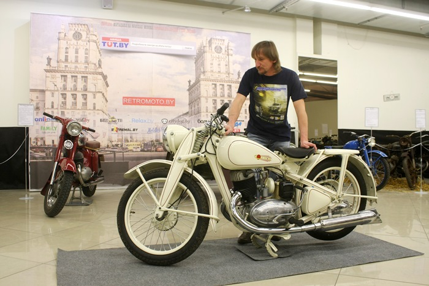
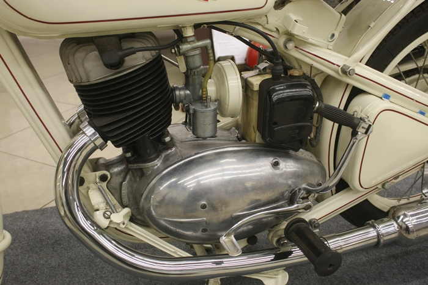
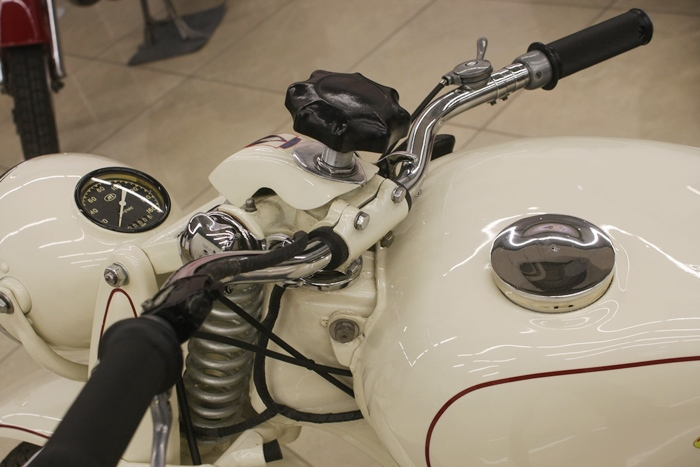
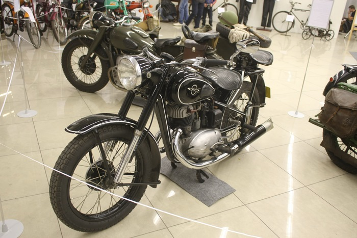
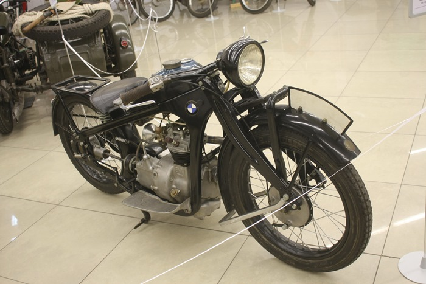
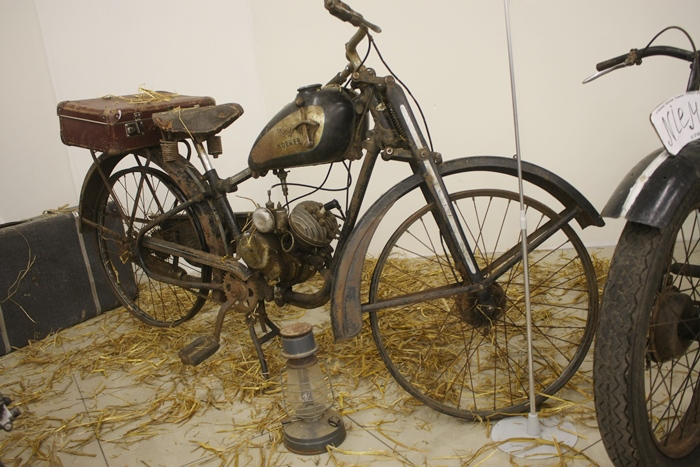
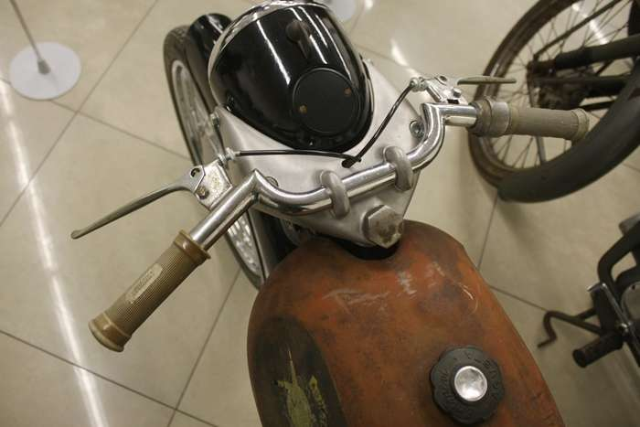

Репортаж с ретро мотовыставки: от первого белорусского мотоцикла «Неман» до армейского Harley-Davidson
На днях свои двери открыла уникальная выставка «Матацыкл на вуліцах Мінска. Гісторыя пра людзей і для людзей». На ней представлено несколько десятков ретромотоциклов - отреставрированных и просто сохраненных в частных коллекциях.
Около сорока самых разных мотоциклов: довоенных, времен Второй мировой войны, послевоенных, советских, французских, итальянских... Есть даже первые белорусские «Неман». Все это собрано на третьем этаже торгового центра «Скала». Но выставка не только про технику, она еще и про людей. Каждый месяц здесь организуют встречи с коллекционерами, историками и реставраторами, которые делятся своим опытом.
Открыли выставку Виталий и Олег Гапановичи. Именно они по праву являются двигателями ретромотодвижения в Беларуси. Вспомнили «Кола Часу»? Их рук дело. На сей раз – выставка раритетных мотоциклов.
В день открытия реставратор Викентий Луцевич рассказал о реставрации ИЖ-350 первых послевоенных лет. По информации организаторов, перед нами единственный в Беларуси мотоцикл этой модели. Советскую копию немецкого DKW NZ-350 Викентий реставрировал два с половиной года, больше всего времени отнял поиск запчастей.
- Мне товарищ привез как-то переднюю вилку и часть рамы в микроавтобусе. Забирай, говорит, за 500 долларов, - рассказывает реставратор. - Очень редкий мотоцикл, не мог не забрать. После этого начал активно заниматься поиском запчастей. Где мне только не приходилось их доставать! Сама сборка заняла месяца три, сложнее всего найти запчасти. На 90 процентов мотоцикл оригинальный.
Все остальное пришлось делать заново по образцам и чертежам «оригинала». Например, выхлопные трубы, различные изделия из резины, тросики приводов…
Викентий уже проехал на этом мотоцикле 6 километров. По его словам, расход топлива составляет 4,5 литра, максимальная скорость – 95 км/ч. Двигатель мотоцикла двухтактный, объемом 346 куб. см и мощностью 11,5 л.с. Выпускался Ижевским машиностроительным заводом с 1946 по 1951 год. Всего было построено 127.090 мотоциклов ИЖ-350.
Из любопытных особенностей отметим возможность регулировки руля по высоте, а пружин - по жесткости. Имеется также регулируемый рулевой демпфер.
Ножной способ переключения передач дублируется ручным - после войны в стране было много инвалидов…

Что еще посмотреть? Посмотреть можно на первый белорусский мотоцикл «Неман», который выпускался на территории Западной Беларуси до Второй мировой войны. Информации о нем ноль. Реставраторам и историкам по крупицам удалось восстановить историю гродненского завода, и вечером 29 апреля эту историю расскажут всем посетителям выставки.


В центре расположились жемчужины ретромотовыставки. Во-первых, это превосходно восстановленный ИЖ-49 1957 г.в. - этот мотоцикл пришел на смену уже знакомому нам ИЖ-350.
М-72 - советский тяжелый мотоцикл. Выпускался крупной серией на нескольких советских заводах с 1941 по 1960 год. Первоначально предназначался исключительно для военных нужд, но после войны поступил в свободную продажу. Прототипом для М-72 послужил немецкий BMW R71.

BMW R2 1931 г.в. – самый старый раритетный мотоцикл выставки. Удивительно, но во многом это сохранившийся экземпляр, то есть рука реставратора его практически не касалась. Рабочий объем двигателя 198 куб. см неспроста: по действовавшим в те годы в Германии правилам управлять мотоциклом с мотором объемом до 200 куб.см можно было без "прав". Максимальная скорость - 95 км/ч, мощность - 5,98 л.с., 3-ступенчатая ручная коробка передач.

Любопытна конструкция передней подвески. В ней упругим элементом является полурессора.

Harley-Davidson WLA 42 - армейская версия гражданского WL. Во время войны мотоцикл поставлялся в Советский Союз по ленд-лизу. Здесь его изменяли, добавляя коляску от М-72. Получил широкое распространение в подразделениях разведки и связи. Производство мотоцикла остановилась после окончания Второй мировой, но было возобновлено в период войны в Корее. Рабочий объем двигателя - 739 куб.с м, 25 л.с., 3-ступенчатая коробка передач. На этом экземпляре сохранились даже оригинальные кофры из кожи бизона! Но самое любопытное в том, что под картером двигателя могла размещаться броневая плита. Зачем она нужна? Допустим, вы связист и мчитесь с куском провода в зубах недалеко от линии фронта. Как только вас начинают обстреливать, просто заваливаете мотоцикл на бок и отстреливаетесь. Вас не убьют - прикрывает броневая плита. Гениально.


Немецкий Мотоцикл Wanderer 1 SP с мотором объемом 98 куб. см. Организаторы специально выставили пару невосстановленных мотоциклов, чтобы показать, какой труд приходится проделывать реставраторам, чтобы старый мотоцикл заблестел краской и новым хромом. Конкретно этот мотоцикл имеет интересную легенду. В Минск его привез в 1944 году участник войны. Потом мотоцикл перешел в собственность коренного минчанина в седьмом поколении. Как его звали, история умалчивает. Виталий Гапанович рассказал, что как-то на разбитой дороге за городом в 1946 году владельца этого мотоцикла остановили вооруженные люди. Тот пытался сбежать, но скорости не хватило. Впрочем, убийством дело не закончилось, неизвестные просто попросили сигарет.
Зачаровывает стенд развития минских мотоциклов. Начинается он полностью отреставрированной "Москвой", затем идет отреставрированный "Минск". А между ними - невосстановленная "Москва", нарочито забросанная соломой. Заканчивается все ММВЗ 3.111 1970-х годов.


Интересен итальянский мотоцикл MV Agusta TLR 1957 г.в. Жители этой страны в дизайне очень хорошо разбираются. Мотоцикл выглядит невероятно стильным даже сегодня. Что любопытно, спидометр являлся опцией. На этом экземпляре его нет. Рабочий объем двигателя – 125 куб. см.
Это лишь малая часть мотоциклетной выставки. В следующий раз мы продолжим близко рассматривать ее экспонаты и обязательно расскажем историю первого белорусского мотоцикла «Неман». Когда закроются двери выставки, пока точно не известно. Как минимум до начала мая она будет действовать. Возможно, больше. Посетить ретромотовыставку можно по адресу: ул. Петра Глебки, 5, ТЦ «Скала». Стоимость - от 40.000 до 60.000 руб. Детям до 6 лет вход свободный.